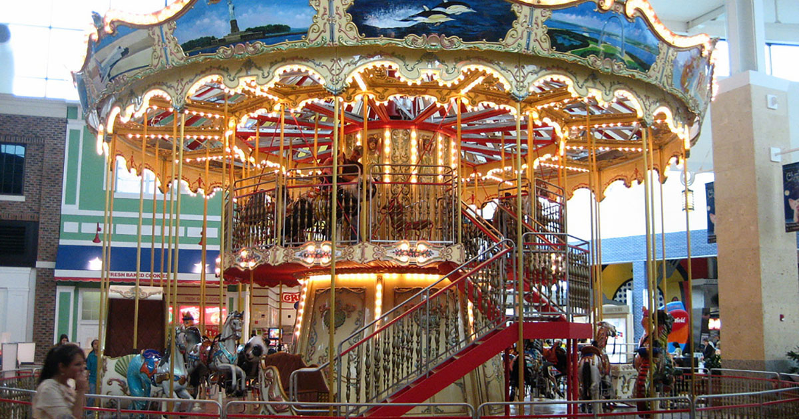
wow a carousel
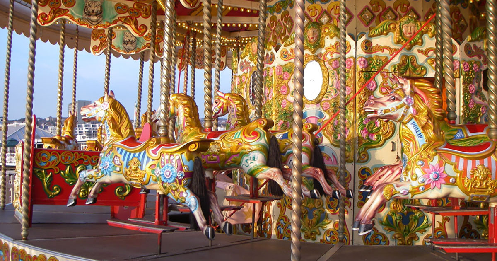
that's quite impressive
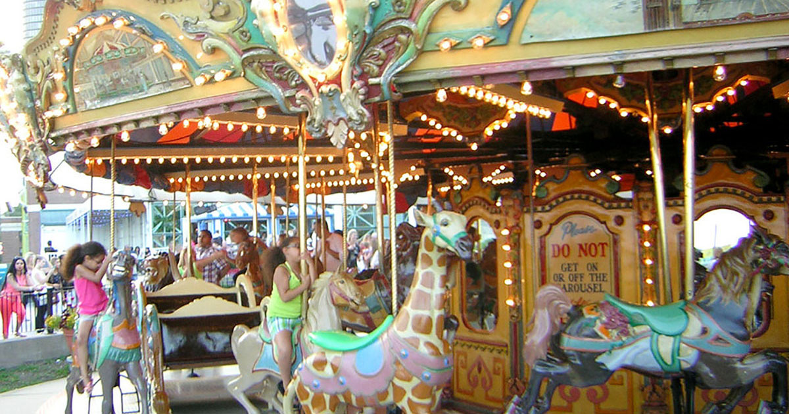
what a fantastic way to display
everything your site has to offer
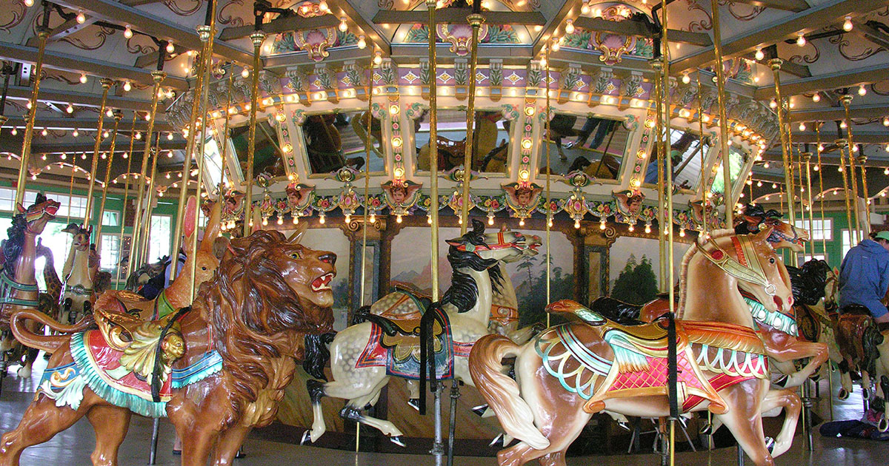
what a nifty little feature
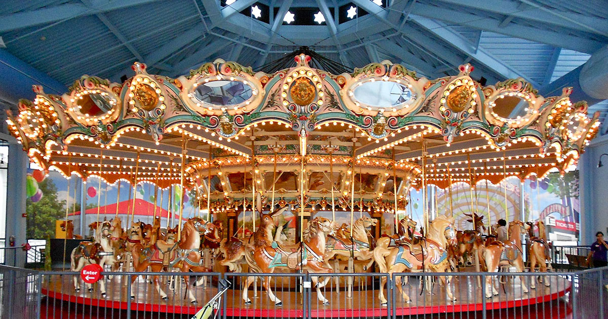
only the best sites seem to have one
isn't this cool?
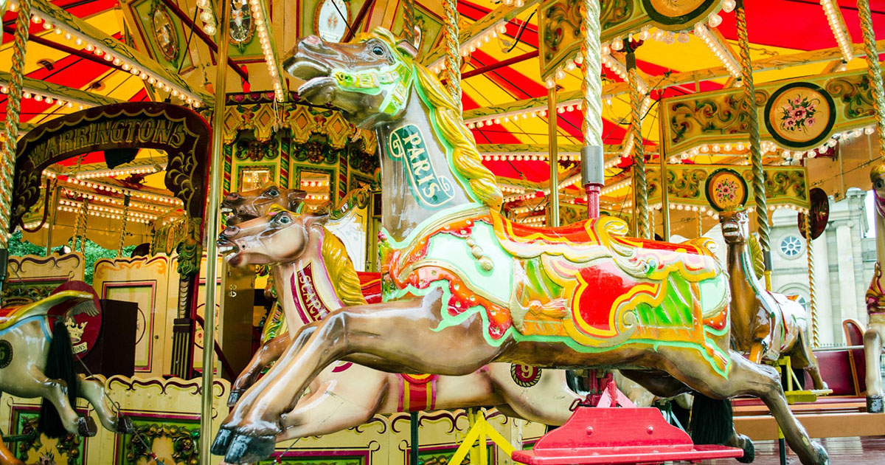
how modern
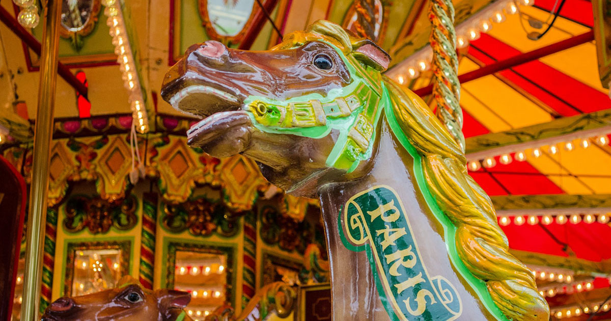
how NEW
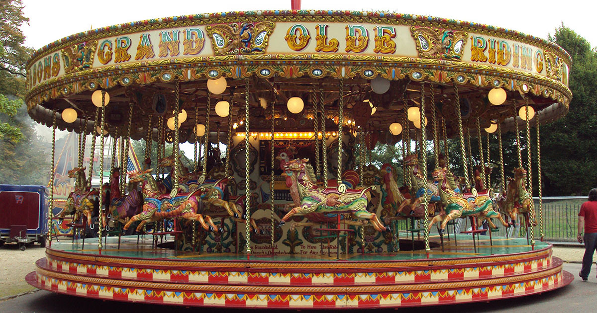
how many slides have we seen so far?
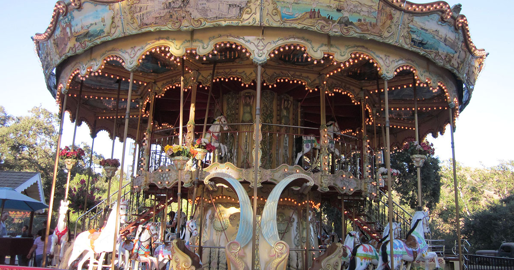
is there any way to go back?
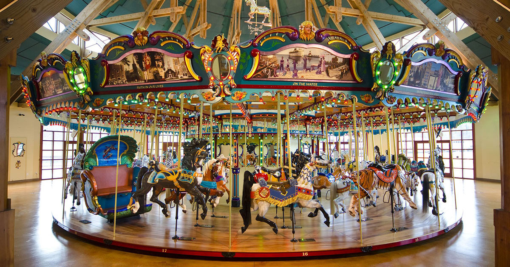
or prioritize what we want to see?
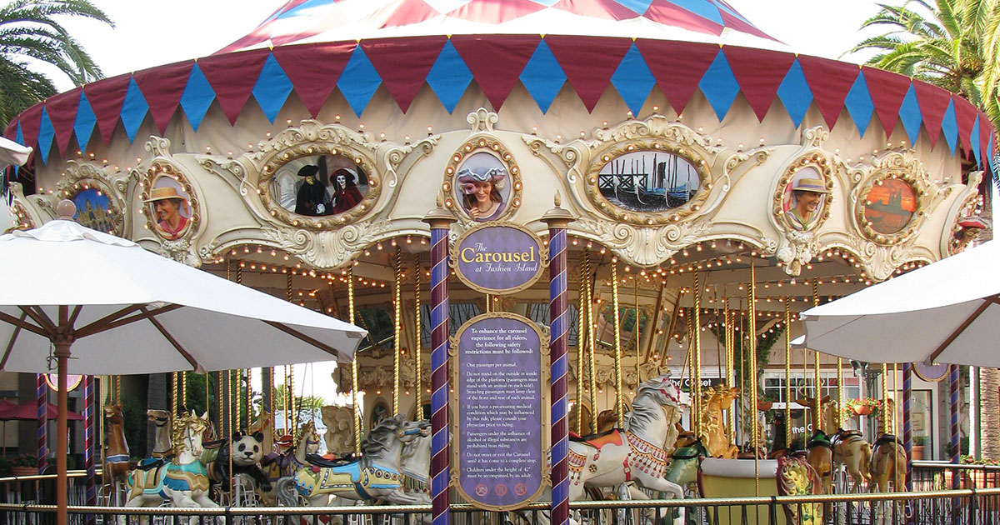
what if i was only interested in
the content of one of the slides?
or what if i wanted to jump back a few slides?
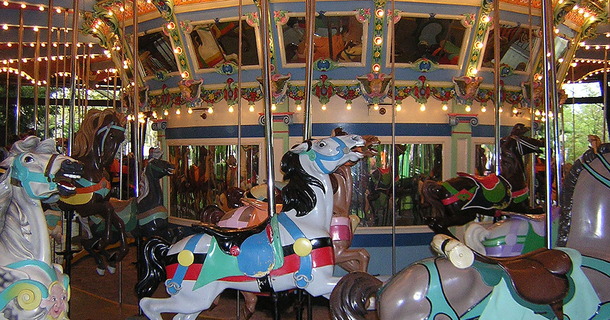
do i have to click the back arrow seven times?
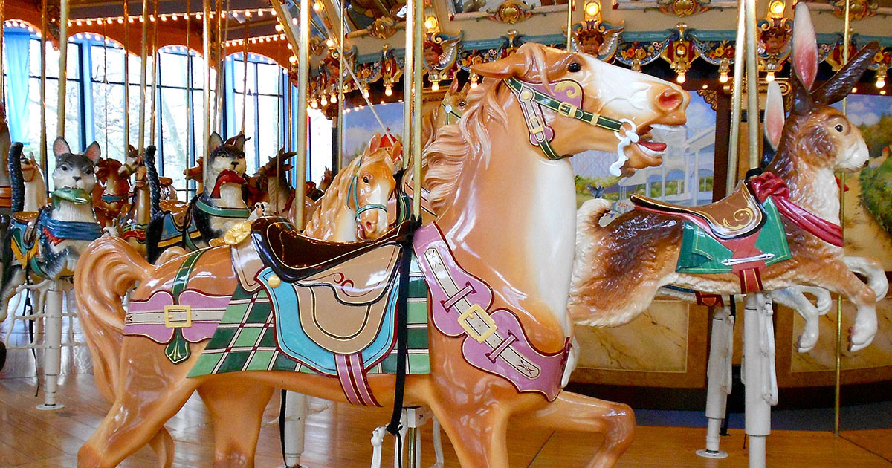
is there an end to this?
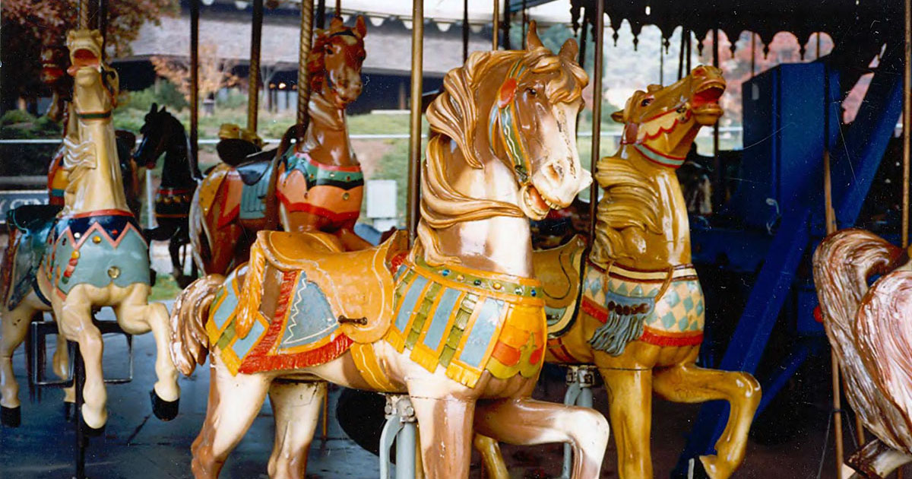
what if i just stopped?
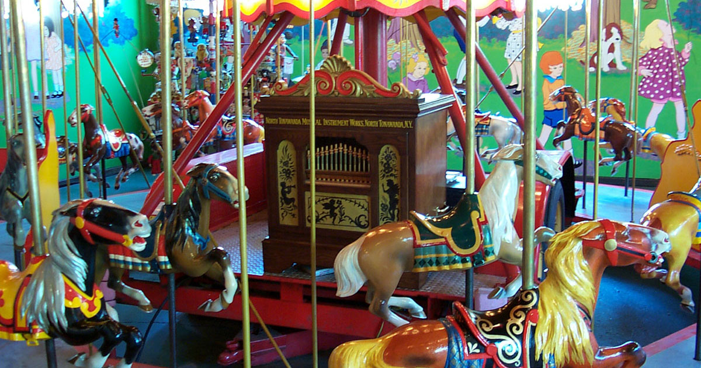
if i just wanted to see more pictures
of carousels, there must be better ways to do that.
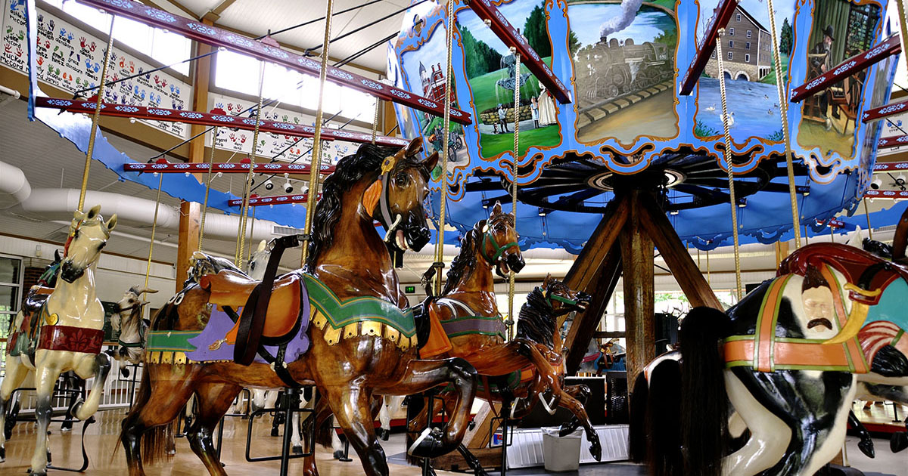
so i guess i'll stop now.
but if I had stopped just then
I could have missed the best content if it was on this slide.
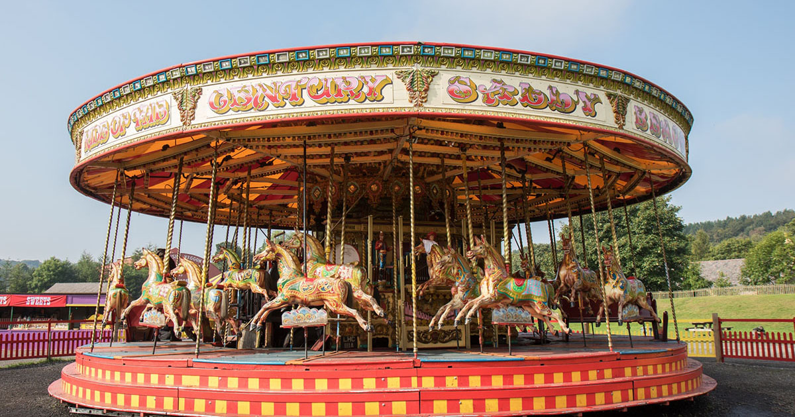
or maybe I might even have disregarded the first slide
as an ad and not even bothered to see the second.
this seems more tedious than it should be.
certainly there has to be a better
solution.
❮
❯
start